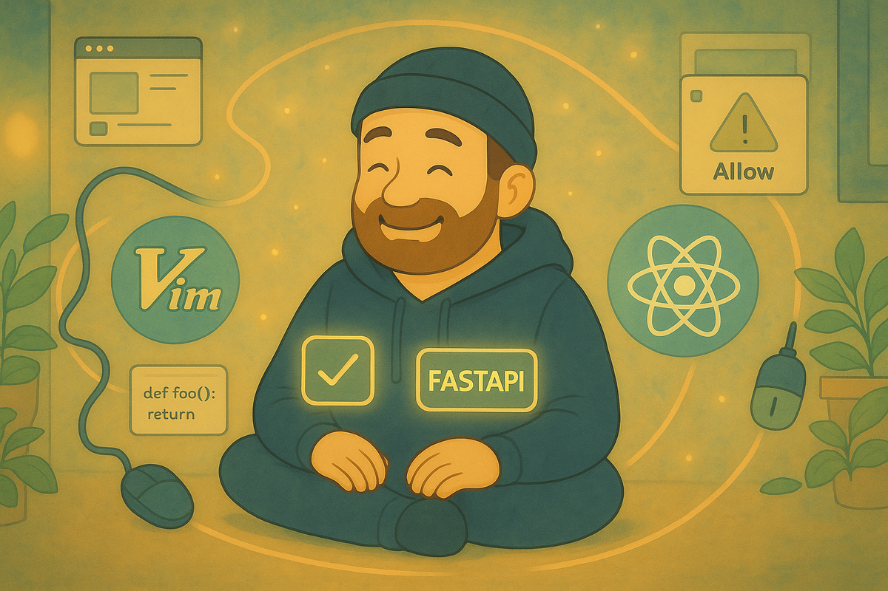

Friction Economy: Unconscious Productivity Drains in Development Workflows
A test for removing repeated steps without weakening review, permissions, or results
By Jory Pestorious
In a 1999 interview quoted by The Register, Bill Joy said he wrote vi over several months while using a home terminal and a 300-baud modem. The slow connection made every screen update and round trip visible. Vi answered that constraint with a compact command language for moving through and changing text. For current development work, ask which repeated steps a command can remove without removing a decision the work still needs.
A code review, a permission decision, and confirmation before a destructive command carry information and responsibility. The friction worth removing is mechanical work that begins after the decision is already made: rebuilding a directory path, reconstructing search flags, finding the same prompt, or translating a schedule into cron syntax.

A developer works at a keyboard while editing, framework, and permission tools surround the workstation.What vi makes visible
Classic vi combines counts, operators, and motions. $ moves to the end of a line, 5w moves five words, and d$ deletes from the cursor to the line ending. Modern Vim adds text objects such as ci" for changing text inside quotes and da( for deleting a parenthesized expression. Macro recording can replay a verified edit when the same transformation appears again.
Vi and Vim commands replace cursor choreography with a description of the intended edit. The commands do not prove that Vim makes every developer faster. They show exactly which operations a command removes, so the user can compare the old and new paths.
Apply the same comparison to each workflow below. Name the repeated operation, show the replacement, define the expected result, and preserve any check that protects the work.
Retrieving a prompt
Prompt reuse often involves two separate decisions: which prompt applies and what task data belongs in it. Reopening a browser conversation does not improve either decision. The browser search only retrieves text.
PromptHive 0.2.8 stores prompts locally and exposes them through ph. A standalone ph use copies the rendered prompt. In a pipeline, it writes the prompt to standard output:
ph use essentials/debug "timeout error in auth service"
ph use essentials/debug "timeout error in auth service" | claude -p
The versioned documentation reports core operations under 15 milliseconds, but that is the project documentation's measurement. I did not reproduce its benchmark here. The inspectable change is simpler: the named prompt and its task text move from one command into the next process without a browser search or clipboard round trip.
The pipeline still needs a trusted working directory and reviewed input. Claude Code print mode skips the workspace-trust dialog, and a prompt can carry secrets or untrusted instructions just as any other input can.
Recalling a directory
A long cd command makes the user reconstruct from memory a full path they have already visited. The destination is known; only the path recall repeats:
cd ~/projects/backend/src/services/auth
# Where was I going again?
zoxide 0.9.8 ranks visited directories using frequency and recency. After it has learned the path, the same destination can be requested with a few distinguishing terms:
z auth
z proj be
z -
Zoxide replaces path reconstruction with a lookup in its directory database. Zoxide can choose the wrong match when names overlap, so pwd remains useful before a command that changes or deletes data.
Searching the intended files
A search command is only shorter if it preserves the intended result set. ripgrep 14.1.1 searches recursively with parallel traversal. Ripgrep respects ignore files by default:
rg authenticate -g '*.js' -g '*.ts'
rg authenticate | fzf
Ripgrep's defaults are useful in a repository, but they are not identical to grep -r. Ripgrep skips hidden and ignored files unless asked otherwise. A comparison must first define the intended file set, including whether ignored or hidden files belong in the answer.
The ripgrep project publishes several benchmarks and warns that one benchmark is not enough. Search the same corpus with the same pattern and output requirements before making a speed claim.
For syntax-aware searches, ast-grep 0.39.6 matches abstract syntax tree patterns instead of plain text. Use it when the question depends on code structure.
Reviewing Git state
One Git path uses a separate command for each stage. The staging command presents each hunk for a decision. The commit message and push destination remain visible at their decision points:
git add -p
git commit -m "fix: resolve auth timeout"
git push origin feature/auth-fix
lazygit 0.55.1 puts file state, patches, branches, commits, and push actions in one terminal interface. Lazygit can remove flag recall and window switching. The interface must preserve patch review before a commit and the branch check before a push.
lazygit
Space stage the selected file or hunk
c commit
P push
Compare whether the candidate makes the changed lines and destination branch easier to verify. If it saves typing while making the patch less visible, it has moved the cost into review risk.
Permission prompts carry decisions
Operating-system privacy dialogs and Claude Code tool approvals are different systems. --allowedTools can change Claude Code's approval behavior. The flag cannot dismiss a macOS prompt that asks whether Python may access Documents.
Claude Code 2.0.17 accepts narrow tool patterns. A test-report task can allow the existing Cargo test command without granting arbitrary shell commands or edit tools:
claude --allowedTools "Bash(cargo test:*)" -p \
"Run cargo test and report failures. Do not edit source files."
Run print mode only in a trusted directory. cargo test compiles and executes repository code and can write build artifacts. Check the input for credentials, customer data, proprietary material, internal URLs, and instructions copied from an untrusted source. The allowlist removes arbitrary Bash and edit tools; it does not make repository code safe or validate the final conclusion.
The broad Bash,Read,Write form grants arbitrary shell and write access for a task that only needs a test report. --dangerously-skip-permissions is not a shortcut for ordinary work. In this release, its own help text recommends use only inside a sandbox without internet access.
Moving work into the background
Calmhive 15.2.0 can run Claude Code iterations outside the foreground terminal and report session progress while the developer works elsewhere. The AFK request below asks for a read-only inventory:
calmhive afk "inspect the test suite and list duplicated setup; do not edit files" --iterations 3
calmhive progress afk-01234567-abcd1234
Calmhive prints the session ID; replace the example ID on the second line with that value. The background process moves waiting out of the terminal. Background iterations do not prove that the task is finished or correct. Review the repository diff and final report.
The same release accepts natural language for schedule time while keeping an executable command as the scheduled action. The command below creates a disabled test schedule for inspection:
calmhive schedule create "every weekday at 9am" \
"cd /path/to/project && npm test" \
--disabled --name "Integration tests"
calmhive schedule list
The release calls Claude Code to interpret the schedule. The parser is not a deterministic local conversion from English to cron. The second argument is a shell command that the scheduler executes verbatim. The schedule record does not store a working directory, so put the project directory in the command. Create it disabled, inspect the generated schedule and command, then enable it.
Calmhive's bundled allowlist includes all 15 core tools and roughly 70 MCP tools, including unrestricted Bash and Write. Calmhive therefore supplies broad preapproval, not a safety review. Use it only where every granted capability is acceptable, and keep credentials and untrusted content outside the run.
Run one comparison
I did not compare the listed tools against one another. Before treating one as an improvement, run the same task against the same repository and input with pinned tool versions.
- Write the acceptable result before changing the workflow.
- Record the current path from lookup through result checking, including any approval or recovery step.
- Change one layer at a time.
- Compare the result and elapsed time. Include the time spent on corrections and permission review.
- Keep the change only if it removes mechanical work without weakening the result or its decision boundaries.
A faster search may inspect a different file set. A prompt shortcut may retrieve stale instructions. A background agent may finish after making edits that cost more to review than the foreground work it replaced.
Vi remains useful here because its command language makes the removed operation visible. Apply that test to the rest of the workflow. If a shortcut hides a permission decision, changes the result set, or adds more review than it removes, the shortcut has moved friction into review or risk.
Sources
- Bill Joy's 1999 account of writing vi over a 300-baud connection, quoted by The Register in 2003
- POSIX vi command reference and Vim command recording documentation
- PromptHive 0.2.8 documentation, July 9, 2025
- Claude Code on npm, version 2.0.17 used for the permission examples
- Calmhive on npm, version 15.2.0 used for the background and schedule examples
- zoxide 0.9.8, ripgrep 14.1.1, lazygit 0.55.1, and ast-grep 0.39.6